Mirassol
Clube atual
37 jogos · 1 gols
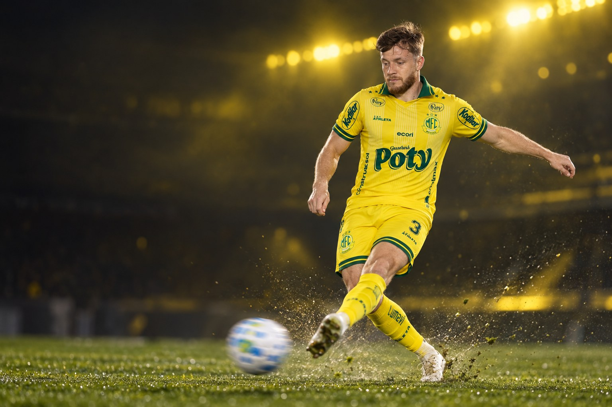
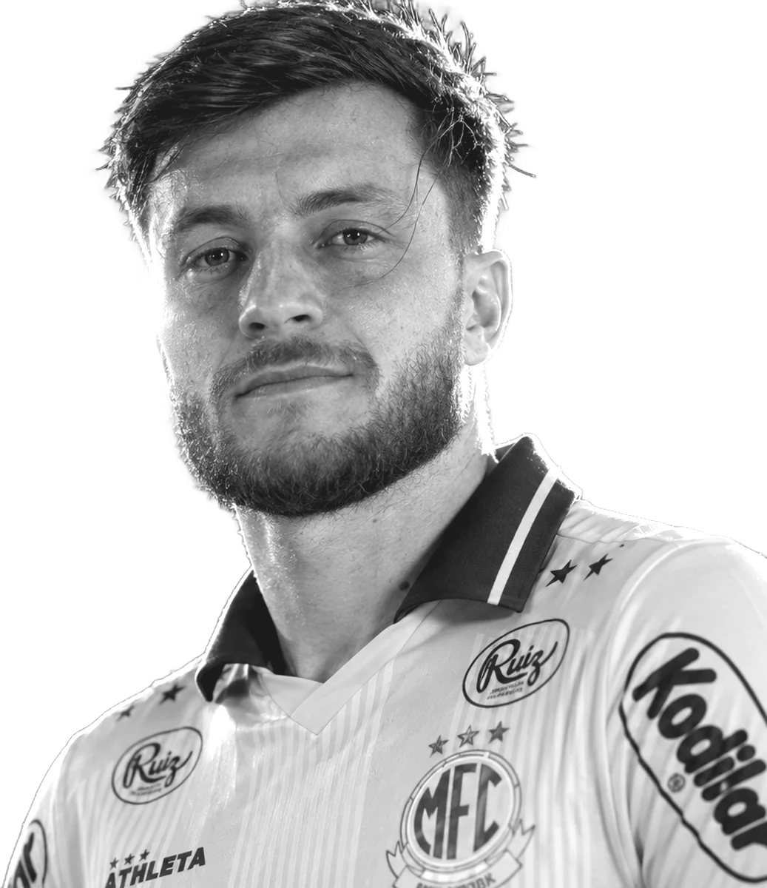
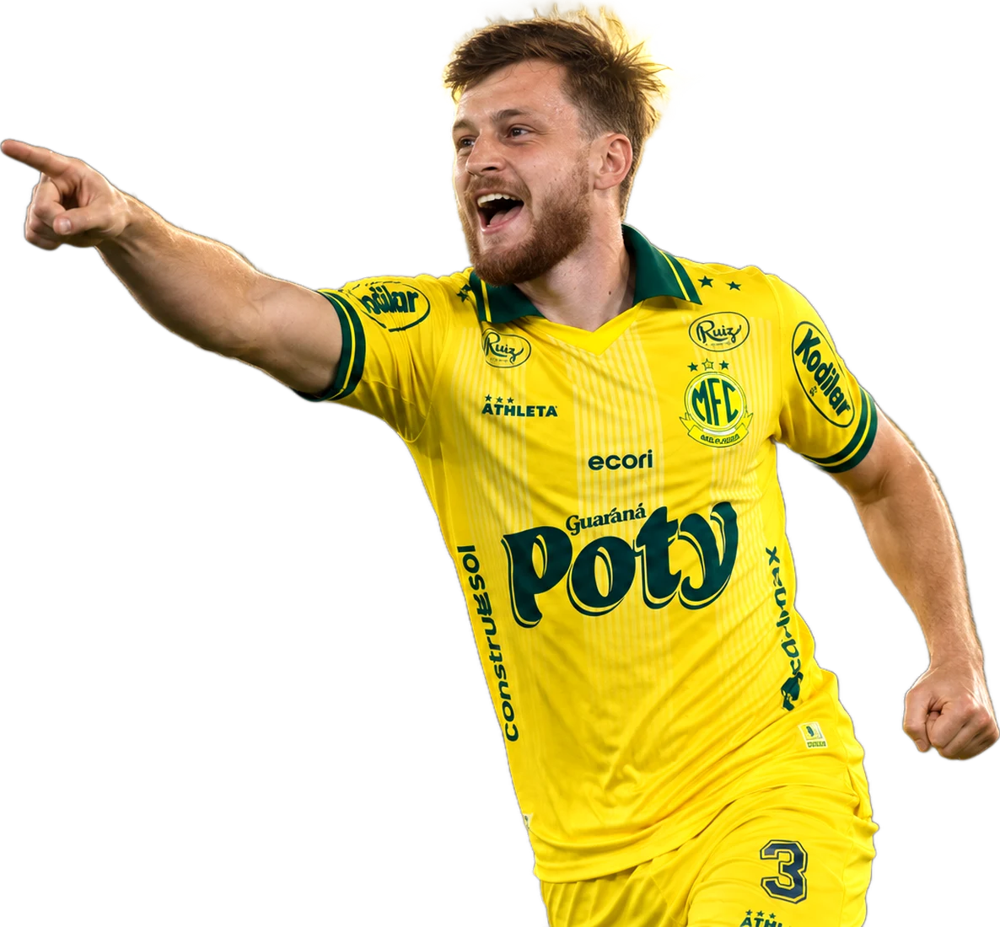
Futebolista profissional · Zagueiro
Willian Estefani Machado
“Sei do tamanho do desafio que me aguarda”
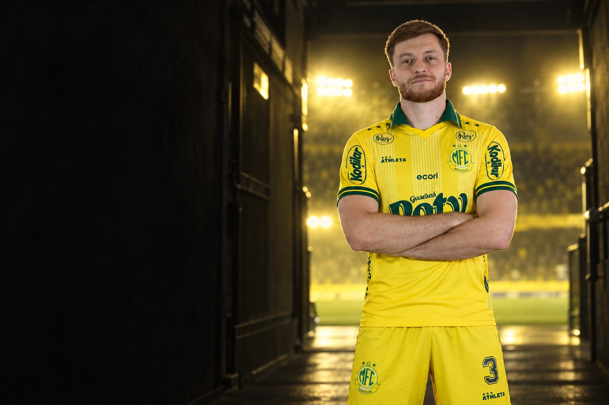
Sobre
Willian Estefani Machado é futebolista profissional e atua como zagueiro e lateral esquerdo. Clube atual: Mirassol.
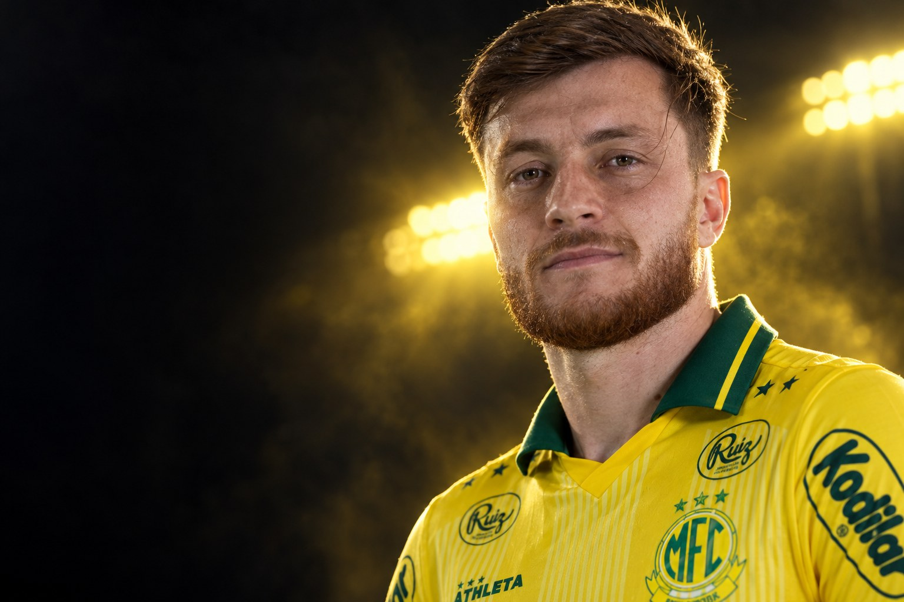
“Sei do tamanho do desafio que me aguarda, mas sinto que estou preparado para poder corresponder às expectativas. Vou me esforçar ao máximo todos os dias.”Willian Machado, ao site oficial do Ceará, em conversa exclusiva publicada pelo clube em dezembro de 2024
Perfil
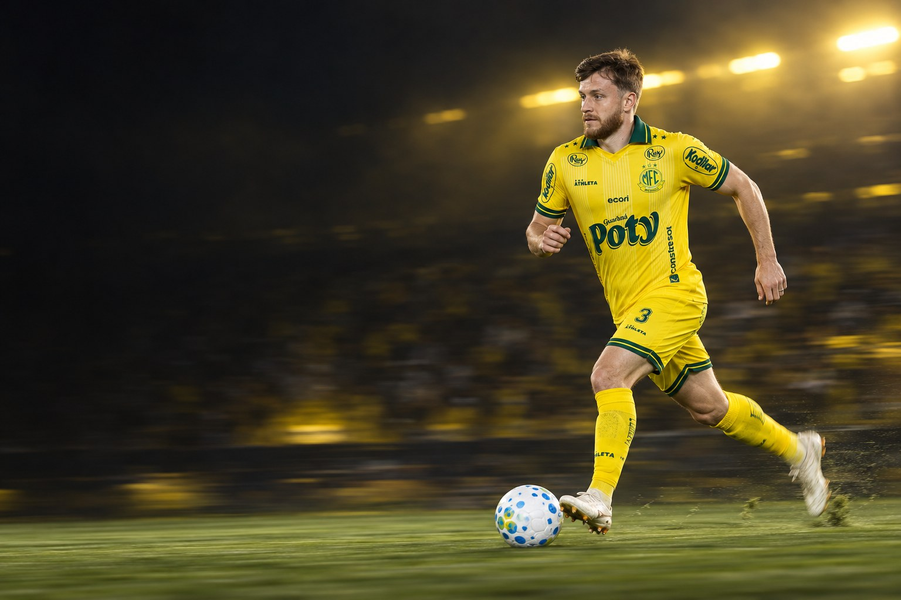
Carreira em números
Carreira
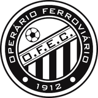
2022Operário-PR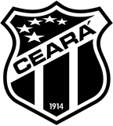
2025CearáClubes em destaque
37 jogos · 1 gols
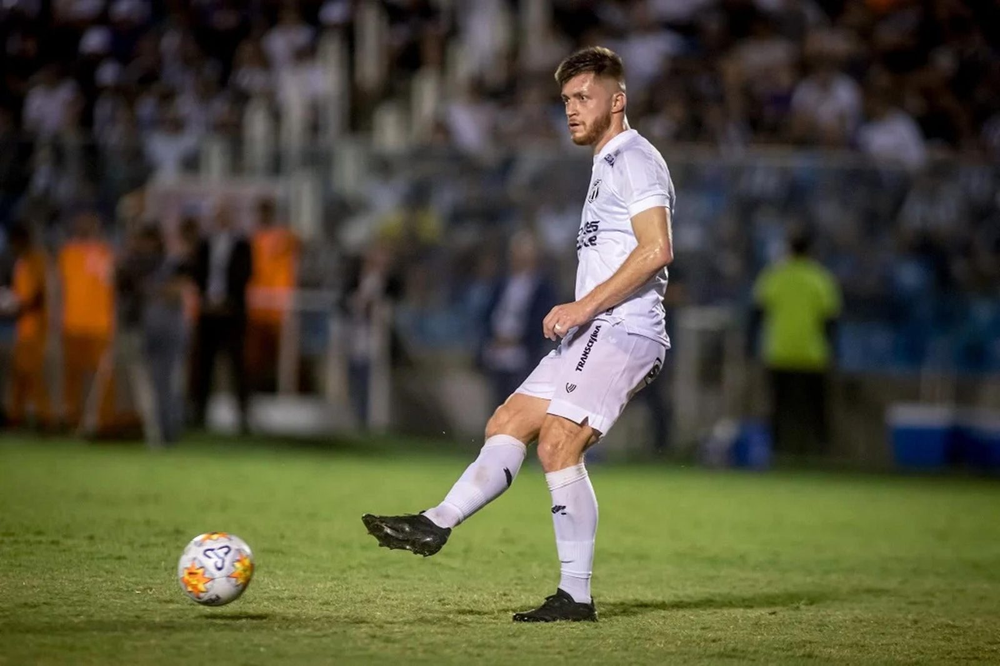
51 jogos · 0 gols
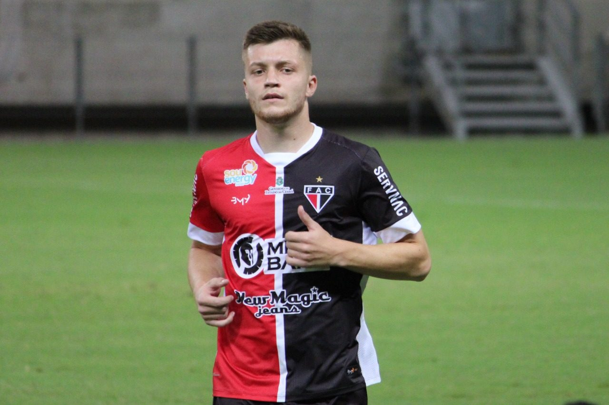
29 jogos · 1 gols
Conquistas
Galeria
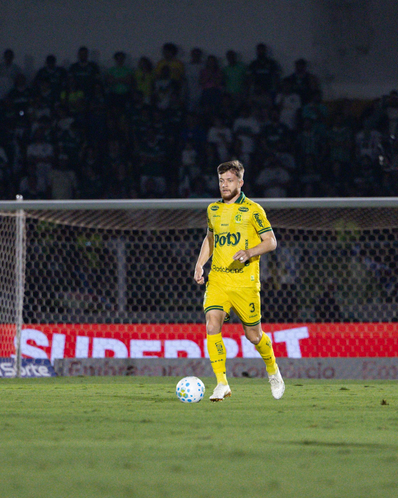
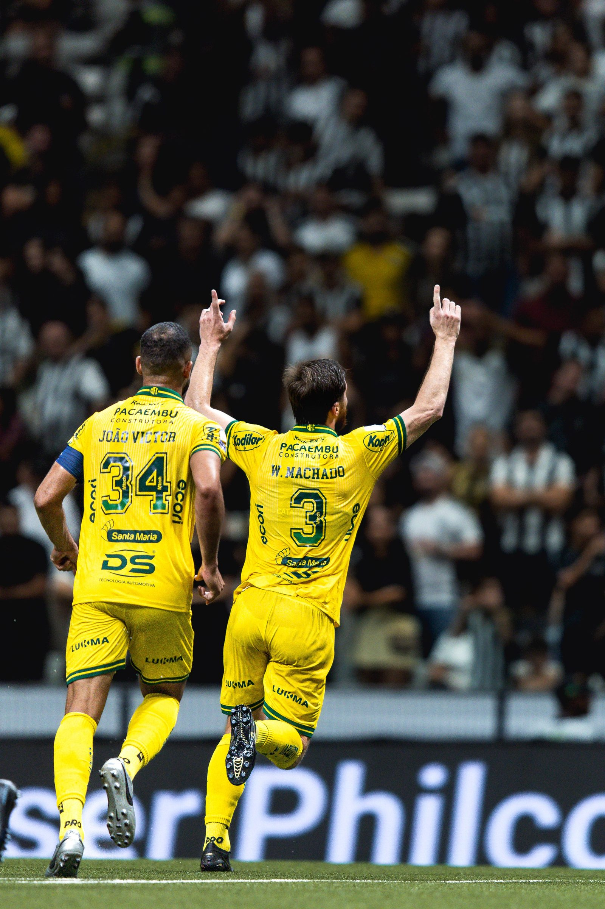
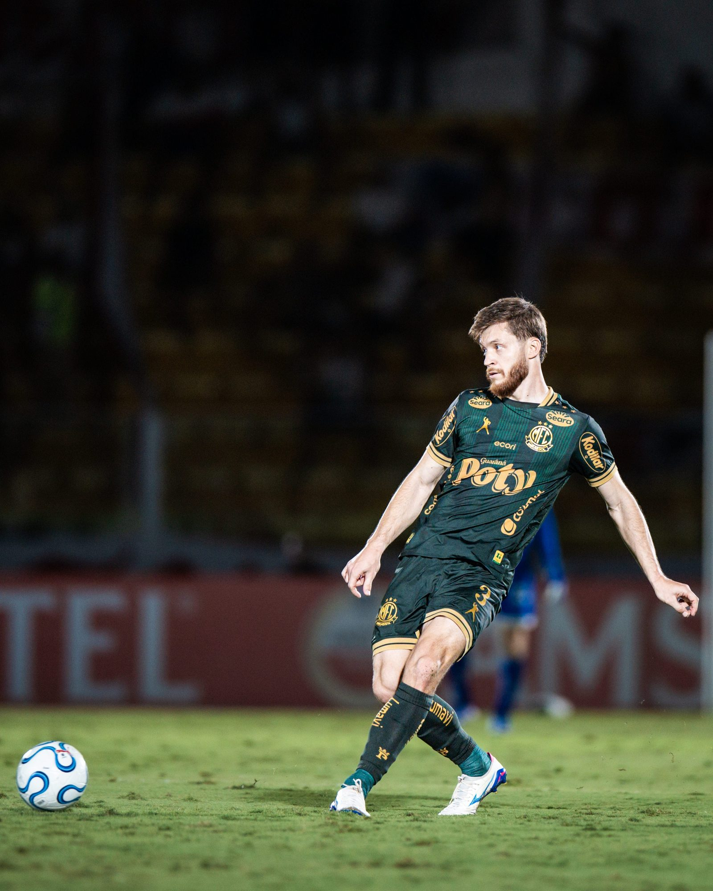
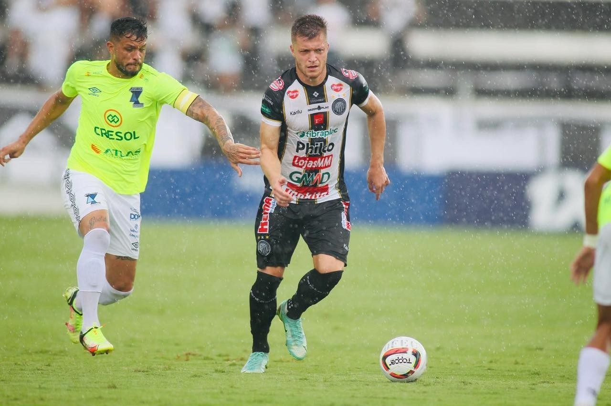
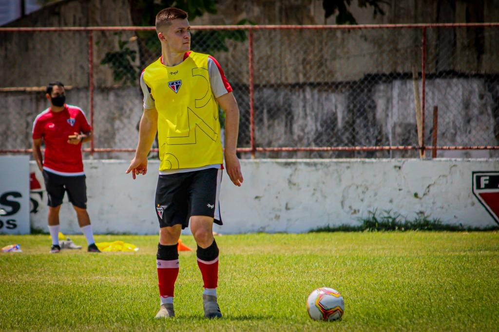
Currículo esportivo
| Temporada | Clube | País | Jogos | Gols | Assistências |
|---|---|---|---|---|---|
| 2026 | 37 | 1 | 1 | ||
| 2025 | Ceará | 51 | 0 | 1 | |
| 2024 | Operário-PR | 49 | 2 | 1 | |
| 2023 | Operário-PR | 36 | 1 | 0 | |
| 2022 | Operário-PR | 18 | 1 | 0 | |
| 2021 | Botafogo-PB | 40 | 5 | 0 | |
| 2020 | Ferroviário | 29 | 1 | 0 | |
| 2019 | Foz do Iguaçu | – | – | – | |
| 2019 | Maringá | 7 | 0 | 0 | |
| 2018 | GE Brasil | 6 | 0 | 0 | |
| 2017 | Fluminense de Joinville | 13 | 5 | 0 | |
| 2016 | – | – | – | ||
| 2015 | – | – | – | ||
| 2014 | – | – | – | ||
| 2013 | – | – | – | ||
| 2012 | – | – | – |
Jogos, gols e assistências conforme a base estatística Ogol. O clube atual segue o anúncio oficial do clube.
Na mídia
Contato profissional
Assuntos profissionais, comerciais e de carreira: fale pelo perfil oficial do atleta.
Mídia kit
International profile